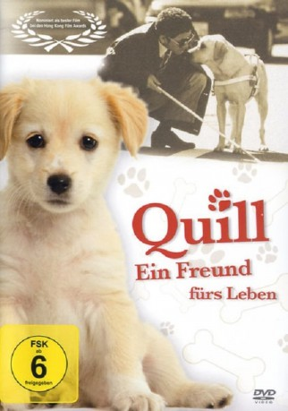
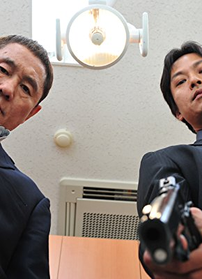
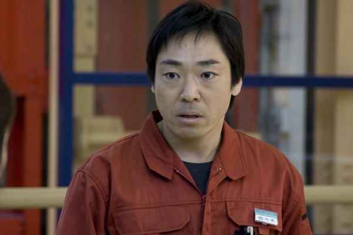

#11317 Ein Hund namens Quill
Alternativ: Quill: The Life of a Guide Dog (Englischer Titel)
 
 IMDB-Wertung: 7.2 / 10
IMDB-Wertung: 7.2 / 10  Metascore: 60
Metascore: 60 
Der Film „Quill – Ein Freund für’s Leben“ erzählt die Geschichte des kleinen Labrador-Retrievers Quill. Quill ist etwas langsamer und bequemer als seine Artgenossen. Aus diesem Grunde eignet er sich hervorragend als Blindenhund. Hierfür durchläuft er eine lange Ausbildung bei seinen neuen Adoptiveltern bis er schließlich bei seinem neuen Herrchen landet. Doch dieser ist Anfangs nicht sehr begeistert von seinem neuen Hund. Doch Quill gelingt sein neues Herrchen umzustimmen und die beiden wachsen zu einem unzertrennlichen Team zusammen.
Jahr: 2004
Dauer: 95 Minuten
FSK:
Land: Japan Studio: OpenpicturesTonspuren:
Untertitel:
Auflösung: SD (640x336) Größe: 699 MB
Genre: Drama
Regisseur: Yôichi Sai
Drehbuch: Ryohei Akimoto, Kengo Ishiguro, Shoichi Maruyama, Yoshihiro Nakamura
Soundtrack: Kuricorder Quartet
Darsteller:
- Kaoru Kobayashi als Watanabe Mitsuru
- Yawara Matsuda als Etsuo Watanabe
-  Kippei Shîna als
-  Teruyuki Kagawa als
- Shinobu Terajima als
- Keiko Toda als
- Tomoka Kurotani als
- Yukika Sakuratani als
- Tarô Ishida als
- Kenji Mizuhashi als
- Chie Sakagami als
- Mantarô Koichi als
- Kuidaore Uchuutei als
- Kiyomi Tanikawa als
- Kouzou Satou als
- Mariko Miyamoto als
- Kohei Yoshida als
- Kento Terai als
- Mitsuru Ochiai als
- Katsuya Nomaura als
- Yukio Hide als
- Tomohiro Nakagawa als
- Kiyohide Yamazaki als
- Reiko Nieda als
- Akihiko Yamada als
- Yûko Natori als
- Laffy als
- Chibichibi Qoo als
- Beat als
- Chibi Qoo als
- Eri als
- Mon als
- Rosinate als
- Apollo als
- Yuma als
Datei: X:\2004(G-M)\Hund namens Quill, Ein (2004, FSK, 640x336).avi seit 18.06.2019
Festplatte: HD 2003-2004-2005(A-F)
 Es gibt insgesamt 41 Filme in der Gruppe '2004(G-M)'
Es gibt insgesamt 41 Filme in der Gruppe '2004(G-M)'